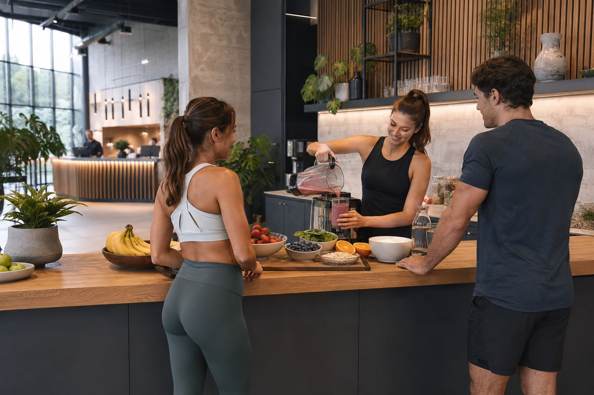
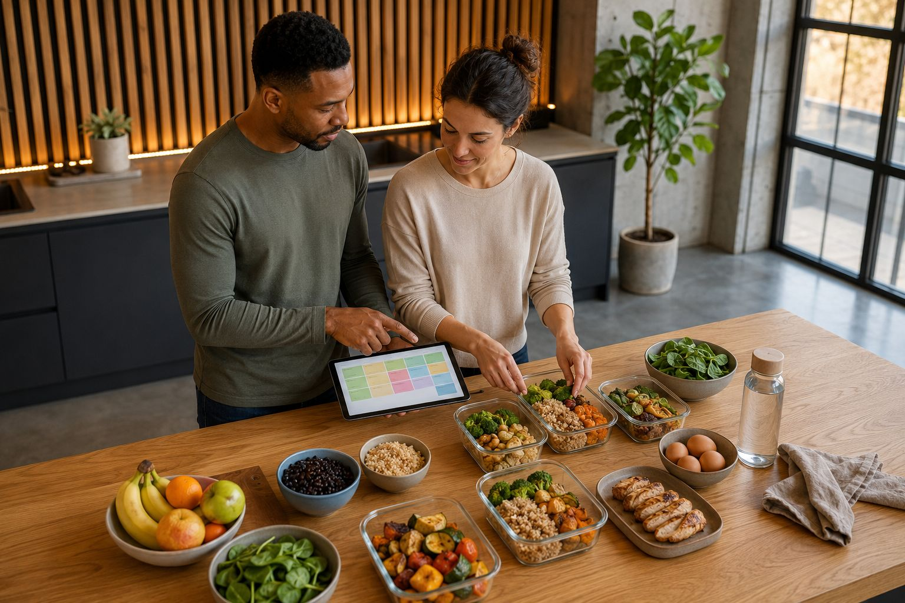
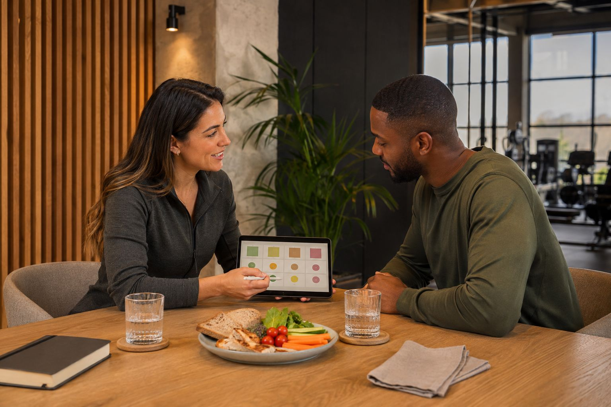
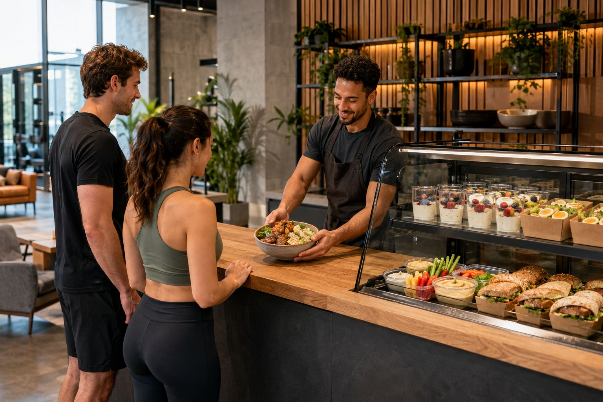

Smoothie Bar
Een eenvoudige post-workout optie met frisse keuzes die passen bij de trainingsflow.

Nutrition
We vertalen voedingskeuzes naar een realistisch ritme met begeleiding die past bij werk, training en herstel.
Voedingsbegeleiding
We bouwen voedingsgewoonten rond de realiteit van onze leden. Niet elk traject vraagt dezelfde aanpak, maar wel duidelijke keuzes en een bruikbaar plan.
Daarom combineren we consultatie, meal planning en eenvoudige opvolging in een structuur die vol te houden is.

Omgeving

Een eenvoudige post-workout optie met frisse keuzes die passen bij de trainingsflow.

Snelle, praktische ondersteuning voor leden die hun voeding graag compact houden.
Concreet weekplan voor leden die routine willen zonder ingewikkelde schema’s.

Voeding krijgt hier dezelfde duidelijke, premium presentatie als training zelf.